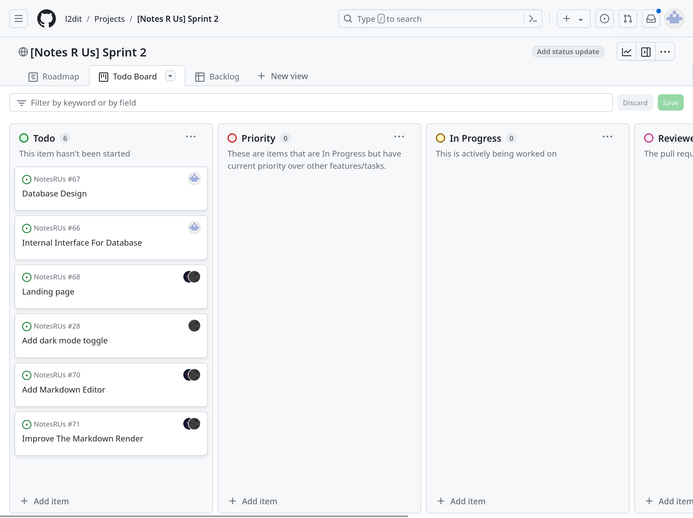
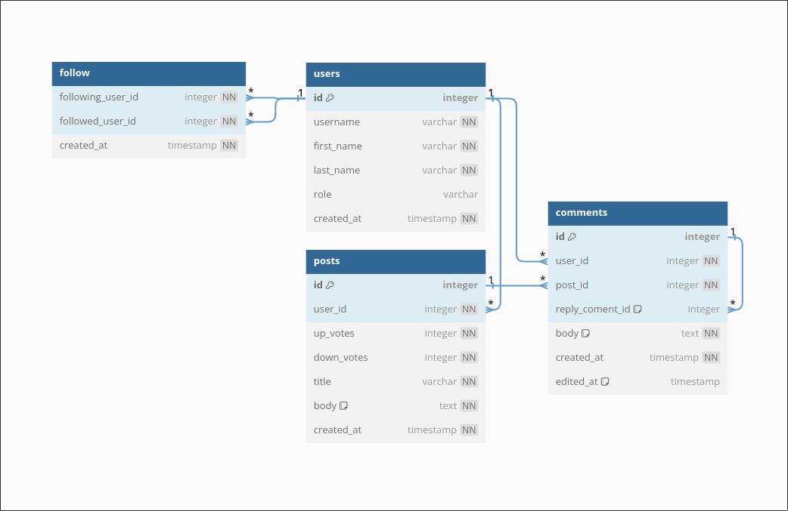

Sprint Planning
Important
At the start of each sprint, look through your backlog and decide which tasks you will aim to complete during this sprint. Add these tasks to the relevant sprint, and add labels indicating which relevant implications each task addresses
We Have a sprint of fleshing out ahead. We have had a lot of feedback for the previous sprint. the rest of my teams focus will be on the user facing interface of the project. my job will be to implement the data base and improve the Ci. The database will be more than it sounds. i have to plan/design it and connect to it in a fashion that multiple clients can write simultaneously. the application it self will retain its state full function. When connected to the database it will become stateless sorting the state in the database.
Project Board Screenshot (Start of sprint)

Commentary (including brief outline of how relevant implications will be addressed)
Development Log
2024-06-16 Data Base Design
https://dbdocs.io/21ltietjens/Notes-R-Us 
2024-06-18 Start Work On API
I have Made a Data Base connection with sea-orm will start work on implementing the schema and finding a authentication solution.
2024-06-20 Database Work
Database is starting to make sense how to implement the schema using sea-orm i have to make a migration the generate a entity module. this will be done after we have a idea of how authentication will work.
2024-06-23 Hanko Authentication
Started a search for a authentication provider and found a cool open source provider called Hanko that we can host directly in our stack. so have started creating the required kubernetes manifests. one thing i’m figuring out are secrets as our manifests are public so will have to find a solution to host the secrets elsewhere.
2024-06-26 Hashicorp Vault
Hashicorp vault is a services I will use to hide our secrets i have just set it up now using the helm manifest found online. it cant be accessed at https://secs.nzdev.org Reference for use tomorrow here https://developer.hashicorp.com/vault/docs/platform/k8s/csi/examples should be able to get Hanko up tomorrow hopefully ran out of time today unfortunately.
2024-07-01 Progress
I have got hanko working i need to also create new database roles for all the applications running. for example at the moment the app role is the deafult roles that only has access to the app database. so i will have to create notes r us and hanko roles repectivly. on a good note tho hanko is deployed i have also tested that it works. this could actualy turn into a finished sprint. It was not looking bright before this but it will be a rush to say the least. but if all the boys chip in we should be fine…
Testing Feedback
Testing
User Demographic
Students from our class. Who can be described as highly digitally literate.
Feedback and Quotes
| Email address | How would you like to be introduced as a first time user to our website. | Would you like to see any other features implemented? |
|---|---|---|
| ? | Landing Page | testing |
| 21bjackson@wakatipu.school.nz | Vue Tour | no |
| 21lkidd@wakatipu.school.nz | Vue Tour | |
| ? | Landing Page | to create notes etter |
| hunter | Vue Tour | Public/private note visibility |
| Louis | Vue Tour | |
| Oscar | Vue Tour | Copying notes & searchability |
| Jacob | Vue Tour | and landing page … multiple platforms |
| Joesph | Vue Tour | both a landing page and a tour; coluorful |
| Joel & Jordie | Landing Page | itergrates with a tour system too a hibrid betwen the two; sorting options of notes. |
| Rocky | Landing Page | hybrid betwen tour and landing page; formating of the notes |
Date
03/07/24
Sprint Review
As a hole our team has made little tangible progress as the environment at the time of the sprint was very busy with lots of assessments from other classes taking priority due to there shorter time-frames. This meant most of the work that got done was researched and testing of these researched technologies. therefore the feedback we requested was on what the potential users wanted to see going forward in the coming sprint.
note...
Summarise key feedback from user testing, and highlight areas of focus for next sprint
Sprint Retrospective
Over this next sprint we have a lot of work for me its going to be implementing Hanko and integrating the app with Hanko and the database. This will be quite a lot of work we will also put some stretch goals in place that we got from our feedback. One request I would like to work on is a search system as this is related to databases and a dip into algorithms potentially.
note...
Reflect on your progress throughout this sprint. Identify what went well, and what could be changed for the next sprint
Info/Links
- Link to release on GitHub: https://github.com/l2dit/NotesRUs/releases/tag/v0.2.0
- Project Board (End of sprint): https://github.com/orgs/l2dit/projects/6
Relevant Implications Discussion (IMPORTANT)
I can’t exactly touch on this with our end product as it essentially hasn’t changed but I can speak on the this in relation to our planing we have done. The time we have had available in class and out has been spent on making decisions crucial to the user experience. An example of this is our database design we had to spend time getting this right as everything is built off of this. one topic i can speak on tho is our continued open infrastructure and code. This impacts the relevant implication of intellectual property we use the Gnu Public Licence its only clauses are on copyright and liability to the software creators. This means our code can be redistributed modified even used commercially. We have used this because we do not intend in publishing this code as our own for profit product. to make a profit I would have to buy a new domain to as .org domains are normally used for non-profits.
Commentary
…